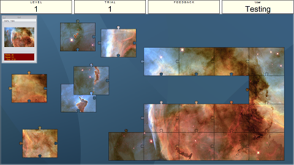

Instructions
This game is a jigsaw game, a digital version of a jigsaw puzzle. A trial consist of a Jigsaw puzzle for you to solve. The first screenshot below indicates what a puzzle will typically look like at the start.
You will see the complete image in a panel in the top left and the rest of your screen will be taken up by the individual puzzle pieces. The more puzzles you complete the higher the level will go. A higher level increases the number of pieces of the puzzles thereby making them more difficult.

You solve the puzzle by moving pieces together that you think fit together. If the pieces actually fit together then as long as you move one piece close enough to the right section of the other piece then they will automatically join. As you can see in the mid-game screenshots above once two pieces are joined they stick together permanently until the puzzle is completed.
Once you have placed the final piece in the puzzle you will be shown the amount of time that it took to complete that puzzle before either a new trial starts or the session ends.